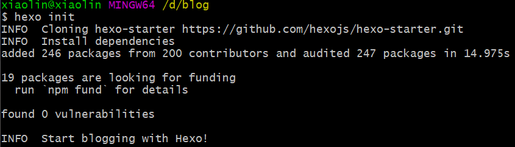
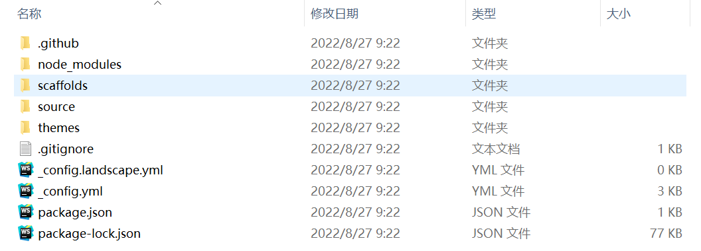
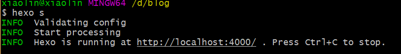
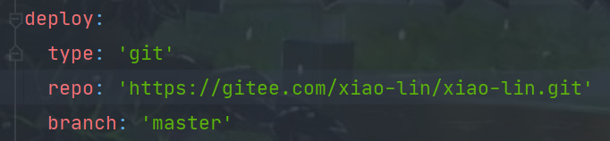
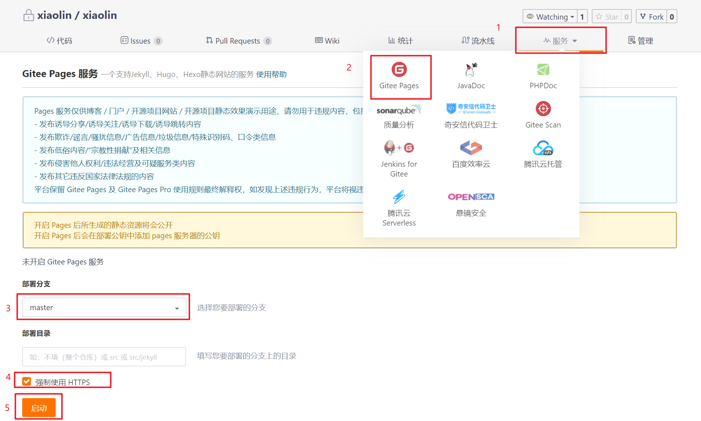
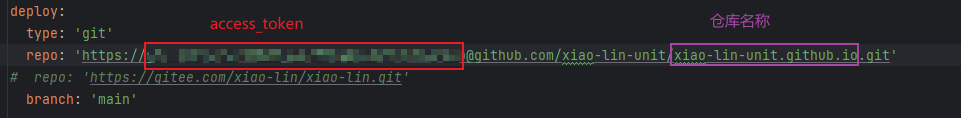
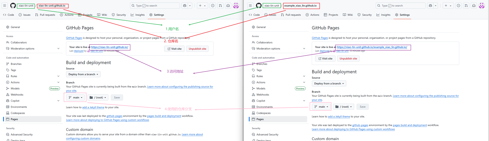

环境
node环境 —> 安装nodegit环境 —> 若需要交给托管中心, 则需要安装git环境hexo环境 —> 博客搭建使用npm install hexo-cli -g
博客搭建
-
创建一个空目录, 空目录, 空目录
-
进入空目录下打开命令行
-
执行
hexo init命令, 进行初始化

-
执行
hexo s或者hexo server命令, 即可启动搭建的博客
访问
http://localhost:4000/即可查看当前的博客 -
执行
hexo new [layout] "title"命令, 新建一个页面layout的选项:
post: 博客 —>source/_post
page: 路由 —>source
draft: 稿件 —>source/_draft
使用gitee部署
-
在
gitee上新建仓库, 并将仓库地址配置到博客根目录的_config.yml中, 如下
-
安装
git部署插件npm install hexo-deployer-git --save和markdown渲染插件npm install hexo-renderer-marked --save -
执行
hexo g或者hexo generate命令生成静态文件在
public目录下可以看到生成的静态文件(将public中的内容放到nginx下, 做好相关配置, 也可以实现) -
执行
hexo d或者hexo deploy推送到gitee此时发现
gitee仓库中已经添加了内容, 这些内容是public目录下的静态文件
成功之后会生成访问地址
gitee的Gitee Pages功能已关闭，可以迁移到github上
使用github部署
-
在
github上新建仓库,仓库名称必须为xxx.github.io, -
在
github上生成一个access_token，需要注意添加哪些权限 -
将仓库地址配置到博客根目录的
_config.yml中, 如下
注意：
网站的访问路径与仓库名称和用户名称都有关系
以
https://{access_token}@github.com/xiao-lin-unit/xiao-lin-unit.github.io.git为例- 解析路径为
https://{access_token}@github.com/{username}/{repository_name}.git其中access_token是验证token，username是github中的用户名，repository_name是仓库名 - 仓库名以
{username}.github.io命名，则访问地址为https://{username}.github.io - 如果未按照提示2中的方式命名，则访问路径会发生变化，具体访问路径可以从仓库的
Settings -> Pages中查看。如，我以example.github.io命名，则访问路径变成了https://{username}.github.io/example.github.io

- 解析路径为
-
安装
git部署插件npm install hexo-deployer-git --save和markdown渲染插件npm install hexo-renderer-marked --save -
执行
hexo g或者hexo generate命令生成静态文件在
public目录下可以看到生成的静态文件(将public中的内容放到nginx下, 做好相关配置, 也可以实现) -
执行
hexo d或者hexo deploy推送到github此时发现
github仓库中已经添加了内容, 这些内容是public目录下的静态文件成功之后会生成访问地址
非一键部署方式可通过Hexo 官网学习
修改主题
-
选择主题
访问https://hexo.io/themes/可以选择自己喜欢的主题
本人选择的是
hexo-theme-cola这一款, 这款比较符合我的期望, 还有评论功能; 最好选择带有说明的主题, 方便使用, 前人栽树后人乘凉. -
从
github上下载选择的主题, 并将整个主题目录添加到themes目录下
-
根据主题中的说明, 进行主题初始化
hexo-theme-cola主题的相关初始化和配置可以查看原作者https://yangxiang.cc/的《如何使用hexo-theme-cola主题》这一篇博客
-
根据需要, 修改配置文件
_config.yml中的配置信息 -
自定义和修改配置内容
-
修改内容: 根据配置搜索定义位置, 如: 我想在
github的图标定义为动态数量的, 则去查询配置文件中github_url的使用位置(在main-left.ejs文件中), 并修改配置
-
修改
icon:-
在https://www.iconfont.cn/manage/index中创建自己的项目, 添加需要的标签

-
项目设置

-
生成
icon引入格式
-
iconfont的引入和使用
-
-
写博客
-
修改配置为文件
_config.yml中的post_asset_folder配置项为true, 允许添加资源文件夹 -
使用
hexo new post "blog_name"命令创建一篇博客, 会在_posts目录下生成一个md文件和一个同名的文件夹如果想要将博客使用文件夹分开存放, 可以使用
hexo new post -p xxx/yyy.md命令创建博客,hexo会在_post文件夹下创建一个xxx的子文件夹, 然后在子文件夹下创建yyy.md, 如果文件路径中含有空格, 则必须使用""括起来 -
编辑
md文件, 书写博客title和内容 -
添加
hexo-asset-img组件, 可以使用markdown中的格式添加图片2023-11-28更新
添加图片的格式要求
1
2
3var regExp = RegExp("!\\[(.*?)\\]\\(" + fileName + '/(.+?)\\)', "g");
// hexo g
data.content = data.content.replace(regExp, "{% asset_img $2 $1 %}","g");上述为
hexo-asset-img处理图片的核心代码, 它是将markdown格式的图片信息替换为编译格式, 使用的图片的所在目录是与文件名同名的, 所以有图片格式要求-
图片路径必须以文章的文件名开头, 不能是
./, 否则无法匹配, 注意是文件名, 跟文章的title无关 -
文件名中不能带有正则表达式的元字符, 如
.,(),*,?,+,\等, 因为处理中的正则表达式是将文件名直接拼接的, 所以其中的包含的正则元字符是没有处理的别问我为啥知道的, 我花了两个多小时发现的😭
最近写的两篇博客的文件名中使用了
()元字符, 发现图片加载不出来, 之前的文章都是可以的, 然后巴拉了一堆文章看没啥用, 决定自己去翻源码看看, 别的不说hexo-asset-img的README.md写的还是不错的:1
# hexo-asset-img
以上为
README.md的全部内容, 很简洁吧😂没办法, 去翻看源码, 还好源码比较少, 好懂, 然后最关键的就是上面两行, 我在内容替换之前和替换之后分别打印了一下, 发现了问题
-
-
如果不想直接发布博客，可以创建草稿
- 使用
hexo new draft title -p xxx/yyy.md会在_drafts目录下创建一个xxx目录，并创建一个yyy.md的博客文件 scaffolds目录下有博客模板，可以自行修改模板内容- 使用
hexo publish title来发布博客
- 使用
优化博客内容
使用插件
-
将
hexo-renderer-marked替换为@upupming/hexo-renderer-markdown-it-plus -
_config.yml中添加配置1
2
3
4
5
6
7
8
9
10
11
12
13
14
15
16
17
18
19
20
21
22
23
24
25
26
27
28
29
30
31
32
33
34
35
36
37
38
39
40
41
42
43
44
45
46
47
48
49# Markdown config
markdown_it_plus:
render:
html: true
xhtmlOut: false
breaks: true
linkify: true
typographer: true
quotes: '“”‘’'
plugins:
- plugin:
name: markdown-it-emoji
enable: true
- plugin:
name: markdown-it-sub
enable: true
- plugin:
name: markdown-it-sup
enable: true
- plugin:
name: markdown-it-footnote
enable: true
- plugin:
name: markdown-it-ins
enable: true
- plugin:
name: markdown-it-mark
enable: true
- plugin:
name: markdown-it-katex
enable: true
anchors:
# Minimum level for ID creation. (Ex. h2 to h6)
level: 2
# A suffix that is prepended to the number given if the ID is repeated.
# collisionSuffix: ''
collisionSuffix: 'v'
# If `true`, creates an anchor tag with a permalink besides the heading.
permalink: false
# Class used for the permalink anchor tag.
permalinkClass: header-anchor
# Set to 'right' to add permalink after heading
permalinkSide: 'left'
# The symbol used to make the permalink
permalinkSymbol: ¶
# Transform anchor to (1) lower case; (2) upper case
case: 0
# Replace space with a character
separator: '-' -
安装对应的插件
1
npm install markdown-it-xxx
添加目录
在文章的开始部分添加如下内容
1 | <!-- toc --> |
该内容不会在文章中显示, 而是会生成目录, 使用hexo自带的toc函数即可渲染目录
目录标签使用:

hexo自带toc函数渲染

hexo自带toc函数渲染结果

此处的渲染结果指的是:
-
添加锚点(其实不使用
toc也有锚点, 标题标签会有id属性, 其值就是标题内容) -
渲染目录标签, 大致如下
1
2
3
4
5
6
7
8
9
10
11
12
13
14
15
16
17
18
19
20
21
22
23
24
25
26
27
28
29
30
31
32
33
34
35
36
37<ol class="toc">
<!-- 一级目录 -->
<li class="toc-item toc-level-3">
<a class="toc-link" href="#%E7%8E%AF%E5%A2%83">
<span class="toc-number">1.</span>
<span class="toc-text"> 环境</span>
</a>
</li>
<li class="toc-item toc-level-3">
<a class="toc-link" href="#%E5%8D%9A%E5%AE%A2%E6%90%AD%E5%BB%BA">
<span class="toc-number">2.</span>
<span class="toc-text"> 博客搭建</span>
</a>
</li>
<!-- ... -->
<!-- 多级目录 -->
<li class="toc-item toc-level-3">
<a class="toc-link" href="#%E4%BC%98%E5%8C%96%E5%8D%9A%E5%AE%A2%E5%86%85%E5%AE%B9">
<span class="toc-number">6.</span>
<span class="toc-text"> 优化博客内容</span>
</a>
<ol class="toc-child">
<li class="toc-item toc-level-4">
<a class="toc-link" href="#%E4%BD%BF%E7%94%A8%E6%8F%92%E4%BB%B6">
<span class="toc-number">6.1.</span>
<span class="toc-text"> 使用插件</span>
</a>
</li>
<li class="toc-item toc-level-4">
<a class="toc-link" href="#%E6%B7%BB%E5%8A%A0%E7%9B%AE%E5%BD%95">
<span class="toc-number">6.2.</span>
<span class="toc-text"> 添加目录</span>
</a>
</li>
</ol>
</li>
</ol>
评论区
欢迎你留下宝贵的意见，昵称输入QQ号会显示QQ头像哦~